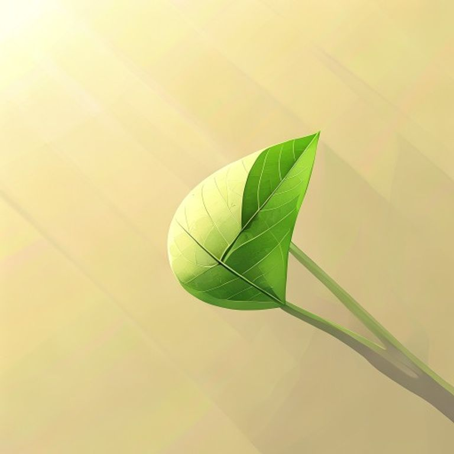
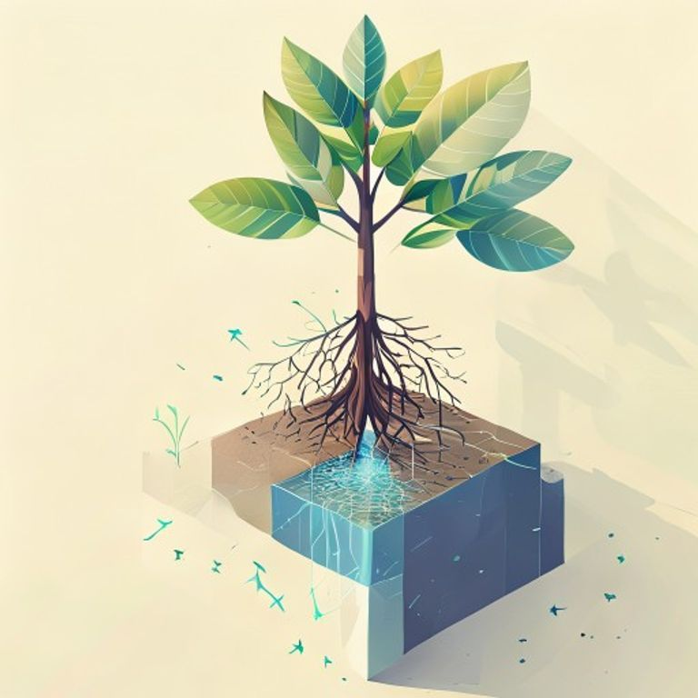
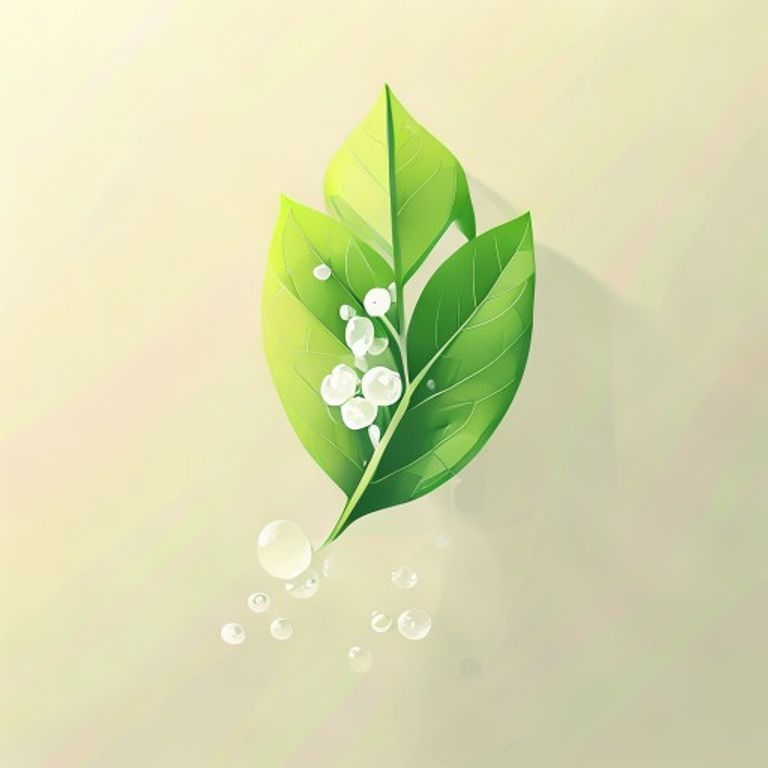

Simulacio end-to-end de com quedaria un text adaptat per ATNE amb
il·lustracions integrades. Estil: isometric_infografic (preset per
STEM). 3 marcadors processats automaticament.
La fotosintesi
Les plantes fabriquen el seu propi aliment. Aquest proces s'anomena fotosintesi.

A single green leaf seen up close on a tree branch, bright sunlight rays shining on the leaf surface, three-quarter view
Per fer la fotosintesi, les plantes necessiten tres coses: llum del sol, aigua i dioxid de carboni. Les fulles capten la llum gracies a la clorofil·la, un pigment verd.

A stylized scene showing a tree with roots absorbing water from the ground (blue arrows pointing up through the trunk) a
Despres de rebre aquests tres elements, la planta produeix dues substancies: glucosa (el seu aliment) i oxigen. L'oxigen surt per les fulles i el respirem nosaltres.

A green leaf releasing small white bubbles of oxygen into the air on its upper side, while a small abstract glucose mole
Gracies a la fotosintesi, les plantes donen oxigen al planeta. Sense plantes, no podriem respirar.